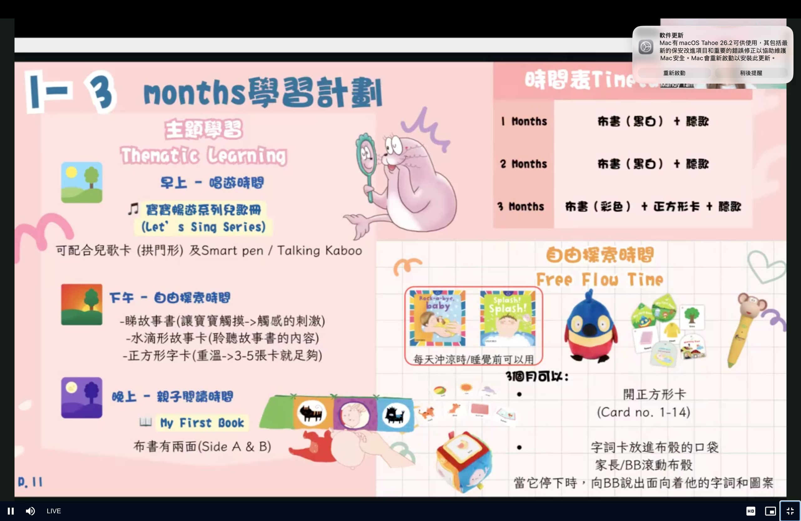
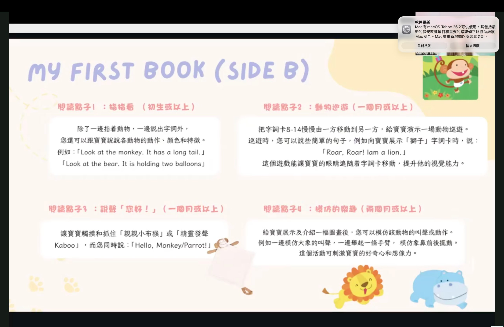
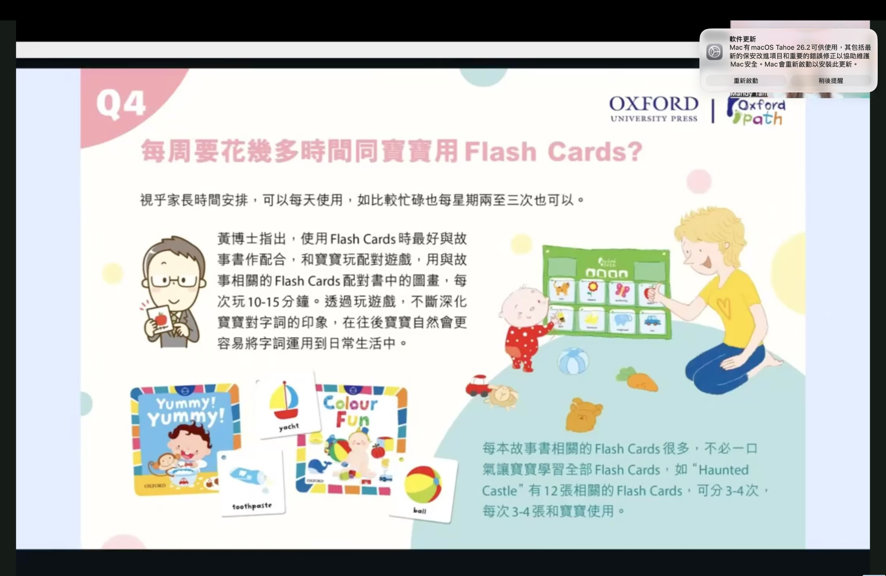

Oxford Path Baby｜點樣用（How-to）圖文整理
你提供嘅截圖整理：使用方法、示例、同 1–3 個月建議。
返回 Baby Set
返回 Oxford Path 目錄
返回 育兒資料目錄
UPDATED
2026-02-14

計劃
1–3 months 學習計劃（時間表/Free Flow）

平台
愛子學習平台 DLP（入口概覽）
工具
字詞樂布骰 Word Card Cube

Flash Cards
Q4：每週要花幾多時間？
如果你想我再補埋「Q1–Q3」或者其他 step 圖，可以繼續丟相過嚟，我會按同一個格式加落去。